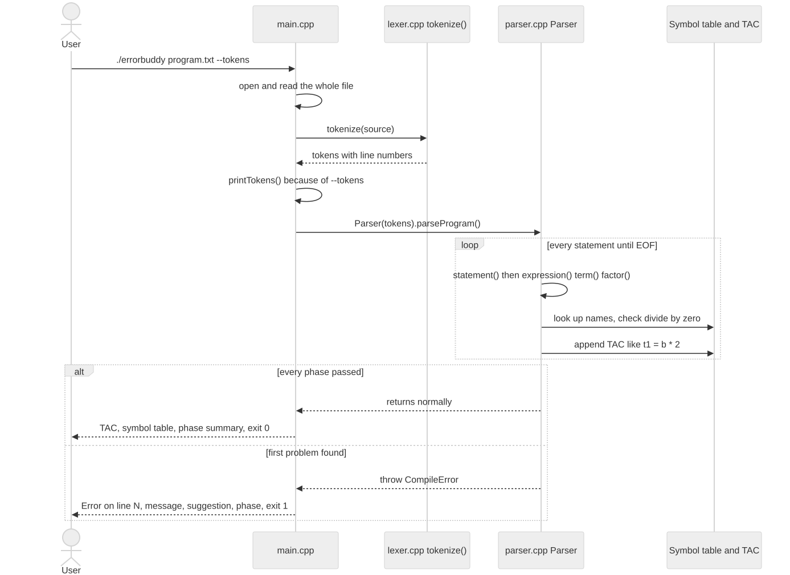
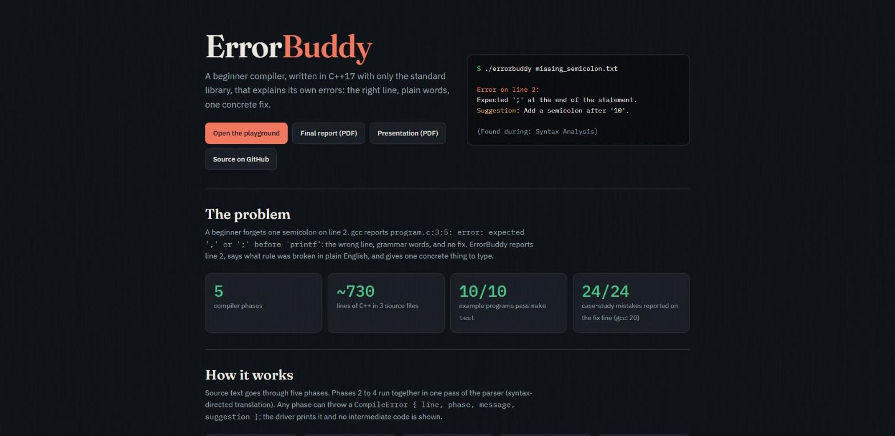
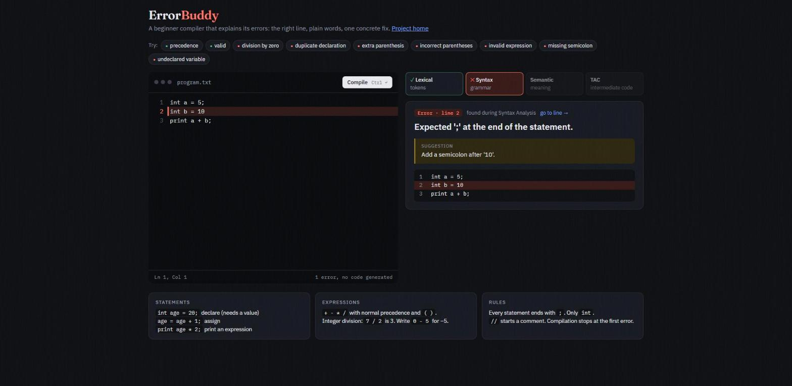
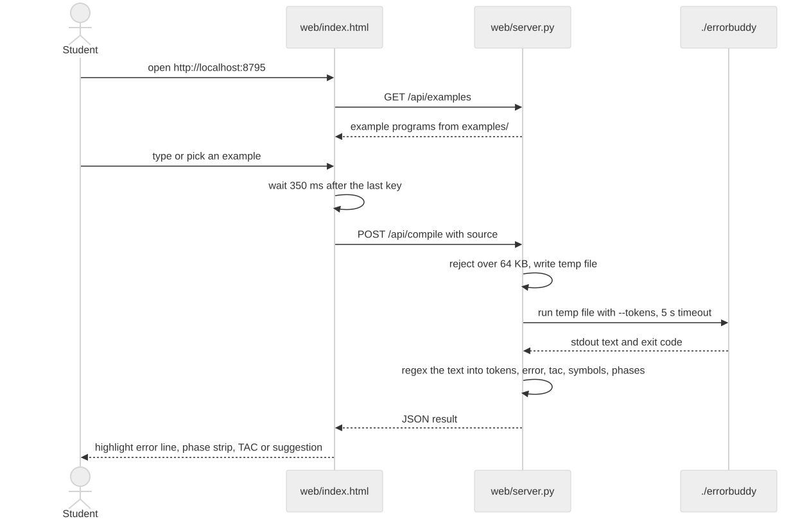

A beginner-friendly compiler that explains its own errors: the right line, plain words, one concrete fix.
| Author | Vardan Pandya |
| Date | 26 October 2026 |
| Implementation | C++17, standard library only · 726 lines in 5 files |
| GitHub repository | https://github.com/Vardanp1/Compiler-Design-Project |
| Live website (GitHub Pages) | https://vardanp1.github.io/Compiler-Design-Project/ |
| Online playground | https://vardanp1.github.io/Compiler-Design-Project/playground.html |
| Presentation | https://vardanp1.github.io/Compiler-Design-Project/ErrorBuddy_Complete.pdf (also ErrorBuddy_Complete.pptx in the repository) |
| This report | https://vardanp1.github.io/Compiler-Design-Project/ErrorBuddy_Final_Report.pdf |
| Test status | 10 of 10 example programs pass make test |
ErrorBuddy is a small compiler, written in C++17 using only the standard library, that translates a beginner programming language into three-address code (TAC). It implements the five classic phases: lexical analysis, syntax analysis by recursive descent, semantic analysis with a symbol table, intermediate code generation, and error reporting. Its distinguishing feature is the error report. Every error is a structured object with four fields (the line where the fix belongs, the phase that found it, a plain-English message, and one concrete suggestion), and the parser inspects the tokens around a failure to name its likely cause. In a case study of 24 classic beginner mistakes, ErrorBuddy reported all 24 on the exact line where the fix belongs, against 20 for gcc 11.4. The compiler is tested by an automated suite (10/10 passing), and is published as a GitHub Pages website with the documentation, the presentation, this report and a playground that shows the real compiler output for every example program.
Students learning to program spend a large share of their time reading compiler errors. Production compilers are written for experienced users: their messages use grammar vocabulary, and they report the position where the parser noticed a problem, which is often after the position where the mistake was made. A typical example is a missing semicolon:
1 int a = 5;
2 int b = 10 <- the real mistake
3 printf("%d", a + b);program.c:3:5: error: expected ',' or ';' before 'printf'
gcc points at line 3, although the fix belongs on line 2. It says "expected ... before", which is parser vocabulary rather than plain English, and it does not say what to type. ErrorBuddy reports the same mistake like this:
ErrorBuddy - compiling examples/missing_semicolon.txt Error on line 2: Expected ';' at the end of the statement. Suggestion: Add a semicolon after '10'. (Found during: Syntax Analysis) Compilation stopped. No intermediate code was generated.
The goal of the project is a complete, readable compiler whose error messages behave like a tutor: the right line, plain words and one concrete fix.
| # | Objective | How it is met |
|---|---|---|
| 1 | Build a working compiler from source text to intermediate code | ./errorbuddy file.txt prints three-address code, the symbol table and a phase summary. |
| 2 | Cover every core phase | Lexer (lexer.cpp), recursive-descent parser, semantic checks and TAC generation (parser.cpp), error reporting (CompileError). |
| 3 | Report errors like a tutor | Four-field errors, diagnosis from surrounding tokens, edit-distance typo hints, fix-line reporting. |
| 4 | Hand-written C++ only | No Lex, Yacc or third-party libraries; C++17 standard library only, built with g++ -std=c++17 -Wall -Wextra -pedantic. |
The language is a small, C-like beginner language. It was deliberately kept small so that every phase could be implemented completely and the effort could go into the error messages. The original proposal targeted a larger beginner-C subset with if/else, loops and printf; those features are listed as future work in Section 16 and are not implemented.
int, declared with int and always given a starting value.+ - * / with normal precedence and parentheses. Division is integer division.print outputs the value of any expression. Every statement ends with ;. // starts a comment.0 - 5), no loops, no if/else, no functions and no input. Compilation stops at the first error.program -> statement*
statement -> declaration | assignment | printStmt
declaration -> "int" IDENTIFIER "=" expression ";"
assignment -> IDENTIFIER "=" expression ";"
printStmt -> "print" expression ";"
expression -> term (("+" | "-") term)*
term -> factor (("*" | "/") factor)*
factor -> NUMBER | IDENTIFIER | "(" expression ")"
Precedence is built into the grammar: term handles * and / one level below expression, so they bind more tightly than + and -. The repetition in expression and term is implemented as a loop, which makes the operators left-associative.
// A valid ErrorBuddy program int age = 20; int score = 10; score = score + age * 2; int bonus = (score - 5) / 5; print score; print bonus * (age + 1);
The compiler consists of three C++ source files and two headers. lexer.cpp implements Phase 1. parser.cpp implements Phases 2, 3 and 4 in a single pass: while it recognises a statement it checks its meaning against the symbol table and emits its three-address code. This technique is called syntax-directed translation. main.cpp is the driver. Errors from every phase travel through one channel, the CompileError struct defined in lexer.h.
struct CompileError {
int line;
std::string phase; // which compiler phase found the problem
std::string message; // what is wrong, in plain English
std::string suggestion; // one concrete way to fix it
};
| File | Lines | Responsibility |
|---|---|---|
main.cpp | 88 | Reads the file path and optional --tokens flag, reads the file, calls tokenize() and Parser::parseProgram(), prints the TAC, symbol table and phase summary, or catches CompileError and prints it. Sets the exit code. |
lexer.h / lexer.cpp | 48 / 114 | Phase 1: TokenType, Token, tokenize(), tokenTypeName(), and the shared CompileError. |
parser.h / parser.cpp | 80 / 396 | Phases 2 to 4: grammar functions, symbol table, binary() and newTemp() for TAC, and the diagnosis helpers expectSemicolon(), factorError(), unknownStatementError(), editDistance(), similarVariable(). |
Makefile | 45 | Targets all, run, test, web, clean. |
examples/ | 10 + 10 | Test programs and their expected output. |
web/ | 89 / 288 | Local browser playground: server.py runs the real binary and returns JSON. |
site/, ci/ | 161 / 329 | GitHub Pages site, its playground and build_site.py; optional WebAssembly workflow in ci/. |
case_study/ | 389 | 24-mistake corpus and the ErrorBuddy versus gcc study. |
| Code | Meaning |
|---|---|
| 0 | Every phase passed; TAC printed. |
| 1 | A CompileError was reported; no TAC printed. |
| 2 | Bad usage or unreadable file (for example: Usage: ./errorbuddy <source-file> [--tokens]). |
| 3 | Internal compiler error (any other exception). |


tokenize() is a hand-written scanner with a single loop over the characters. A newline increments the line counter; spaces and // comments are skipped; a run of digits becomes a NUMBER; a letter or underscore starts a name, and the whole words int and print become keywords; single characters become operators, =, parentheses or ;. The list always ends with END_OF_FILE. Every token stores its type, its exact text and its line, and those line numbers are what make accurate error lines possible later.
The lexer reports three kinds of lexical error: an unknown symbol such as @, a number larger than INT_MAX, and a name that starts with a digit such as 2nd. The --tokens option prints the token list:
ErrorBuddy - compiling examples/precedence.txt Tokens (output of the lexer): Line Type Text 1 KEYWORD int 1 IDENTIFIER a 1 ASSIGN = 1 NUMBER 5 1 SEMICOLON ; 2 KEYWORD int 2 IDENTIFIER b 2 ASSIGN = 2 NUMBER 10 2 SEMICOLON ; 3 KEYWORD int 3 IDENTIFIER c 3 ASSIGN = 3 IDENTIFIER a 3 OPERATOR + 3 IDENTIFIER b 3 OPERATOR * 3 NUMBER 2 3 SEMICOLON ; 4 KEYWORD print 4 IDENTIFIER c 4 SEMICOLON ;
The parser is a recursive-descent parser with one C++ function per grammar rule: statement(), declaration(), assignment(), printStatement(), expression(), term() and factor(). statement() dispatches on the first token: int starts a declaration, print a print statement, and a name followed by = an assignment. Anything else goes to unknownStatementError(). factor() recurses on (, with a nesting limit of 200.
For int c = a + b * 2;, declaration() calls expression(); the first term() returns a; + is seen; the next term() reads b, sees *, reads 2 and calls binary(), which emits t1 = b * 2. Back in expression(), binary() emits t2 = a + t1. expectSemicolon() finds the ;, c is entered in the symbol table and c = t2 is emitted.

The symbol table is a std::map<std::string, Symbol>, where Symbol holds the declaration line and the current value. Checks run inside the parser at the moment a name or operator is seen:
| Check | Example |
|---|---|
| Undeclared variable, with a "Did you mean" hint for close names | scroe = 2; → Did you mean 'score'? |
| Duplicate declaration | Variable 'age' has already been declared (on line 1). |
| Variable used in its own declaration | int a = a + 1; (a name is added only after its initial value is parsed) |
| Division by zero, including through variables and expressions | a / zero, 8 / (4 - 4) |
| Integer overflow of a result | Result outside INT_MIN..INT_MAX |
| Keyword used as a variable name; declaration without a value | int print = 1;, int a; |
Because the language has no input and no loops, every value is known at compile time. ErrorBuddy tracks values in the symbol table, which is how a division by a variable that holds 0 is caught before the program runs:
ErrorBuddy - compiling examples/division_by_zero.txt Error on line 3: Division by zero. Variable 'zero' is 0 at this point, so dividing by it is impossible. Suggestion: Make sure the value on the right of '/' is not zero. (Found during: Semantic Analysis) Compilation stopped. No intermediate code was generated.
The intermediate representation is three-address code. Each instruction has at most one operator. binary() computes the value, checks for division by zero and overflow, takes a fresh temporary from newTemp() and emits tN = left op right. Temporaries are numbered t1, t2, and so on, skipping any name the user wrote, so a temporary never clashes with a variable. Parentheses only change grouping and produce no instructions. Code for a statement is emitted as soon as it is parsed, so the TAC is in source order, and it is printed only if the whole program compiles. The complete output for examples/valid.txt:
ErrorBuddy - compiling examples/valid.txt
Compilation successful!
Intermediate Code (Three-Address Code):
age = 20
score = 10
t1 = age * 2
t2 = score + t1
score = t2
t3 = score - 5
t4 = t3 / 5
bonus = t4
print score
t5 = age + 1
t6 = bonus * t5
print t6
Symbol Table:
age int (declared on line 2)
bonus int (declared on line 5)
score int (declared on line 3)
Phases completed:
[OK] 1. Lexical Analysis - 41 tokens
[OK] 2. Syntax Analysis - 6 statements
[OK] 3. Semantic Analysis - 3 variables, no errors
[OK] 4. Intermediate Code - 12 instructions
Any phase reports a problem by throwing a CompileError; main.cpp catches it, prints the four fields in a fixed format and exits with code 1. What makes the messages useful is the diagnosis that happens before the throw.
expectSemicolon() runs at the end of every statement. If the next token is not ;, it looks at what it is:
| Next token | Diagnosis |
|---|---|
) | Found an extra ')' that has no matching '('. |
= | Unexpected '='. A statement can contain only one '='. |
a name, number or ( on the same line | Missing operator between the two values. |
| anything else | Expected ';' at the end of the statement, reported on the line of the previous token, which is where the fix belongs. |
factorError() handles a missing value (two operators in a row, a negative literal, empty parentheses, a keyword inside an expression, a program that ends mid-expression). unknownStatementError() handles a statement that starts wrongly (a misspelled or capitalised keyword, a name on its own, an extra ;, an = with no name).
Hints use the Levenshtein edit distance, computed in a single rolling row (editDistance()). The shipped rule, in looksLike(), allows 1 edit for targets of up to 3 letters and 2 edits for longer ones and never suggests the word itself; similarVariable() skips variable names shorter than 3 letters. The rule was chosen by the study in Section 14.3.
| Program | ErrorBuddy output |
|---|---|
division_by_zero.txt | Error on line 3: Division by zero. Variable 'zero' is 0 at this point, so dividing by it is impossible. |
duplicate_declaration.txt | Error on line 4: Variable 'age' has already been declared (on line 1). |
empty.txt | Error on line 1: The program is empty. There is nothing to compile. |
extra_parenthesis.txt | Error on line 2: Found an extra ')' that has no matching '('. |
incorrect_parentheses.txt | Error on line 2: Missing ')' to close the '(' opened on line 2. |
invalid_expression.txt | Error on line 2: Two operators in a row: '+' followed by '*'. |
missing_semicolon.txt | Error on line 2: Expected ';' at the end of the statement. |
precedence.txt | Compilation successful |
undeclared_variable.txt | Error on line 2: Variable 'marks' has not been declared. |
valid.txt | Compilation successful |
| Command | What it does |
|---|---|
make | Builds ./errorbuddy with g++ -std=c++17 -Wall -Wextra -pedantic -O2. |
./errorbuddy file.txt [--tokens] | Compiles a file; --tokens also prints the lexer output. |
make run FILE=examples/valid.txt | Builds and compiles one file. |
make test | Runs every example and diffs its output with examples/expected/*.out. |
make web | Starts the local playground at http://localhost:8795. |
python3 case_study/run_study.py [--hints | --lexer] | Reproduces the case-study numbers. |
python3 report/build_report.py | Regenerates this report. |
Tools used: C++17 and its standard library, g++ and GNU Make for the compiler; Python 3 standard library for the local web server and the case study; Emscripten for the WebAssembly build; GitHub Pages for hosting (with an optional GitHub Actions workflow); Mermaid for the architecture diagrams.
The project has two browser front ends that share one page design and one compiler.
make web): web/server.py serves web/index.html and an endpoint POST /api/compile. It writes the source to a temporary file, runs the real ./errorbuddy --tokens with a 5-second timeout and turns its text output into JSON (tokens, error, TAC, symbols, phases). The page recompiles about 350 ms after typing stops, highlights the error line, and shows how far the pipeline got.site/build_site.py builds the compiler, runs it on every example program with --tokens, and records the real output in examples.json. The site is published from the gh-pages branch and contains the project page, the playground (https://vardanp1.github.io/Compiler-Design-Project/playground.html), the architecture diagrams, the presentation and this report. The playground uses the same page design as the local one and parses the recorded output with a JavaScript port of the server's parser, so every example shows exactly what the compiler prints. Compiling new code needs the local playground or the command line.The repository also contains ci/github-pages-wasm.yml, an optional GitHub Actions workflow. On every push to main it builds the compiler natively and runs make test, compiles the same main.cpp, lexer.cpp and parser.cpp to WebAssembly with Emscripten, and deploys the site. With that build present, the playground writes the program into Emscripten's in-memory file system and calls the compiler's main() directly, so any program can be compiled in the browser without reimplementing compiler logic in JavaScript. Enabling it means moving the file to .github/workflows/, which requires a GitHub token with the workflow scope.



Each example program targets one behaviour, and its expected output is stored next to it. make test compiles every example and compares the output byte for byte. Output of the run used for this report:
PASS examples/division_by_zero.txt PASS examples/duplicate_declaration.txt PASS examples/empty.txt PASS examples/extra_parenthesis.txt PASS examples/incorrect_parentheses.txt PASS examples/invalid_expression.txt PASS examples/missing_semicolon.txt PASS examples/precedence.txt PASS examples/undeclared_variable.txt PASS examples/valid.txt 10 passed, 0 failed
The suite covers a valid program, operator precedence, a missing semicolon, an undeclared variable, a duplicate declaration, two operators in a row, a missing and an extra parenthesis, division by a variable that is zero, and an empty program. The optional GitHub Actions workflow in ci/ runs the same suite before each deployment.
case_study/run_study.py runs 24 classic beginner mistakes (defined in case_study/corpus.py) through three compilers: G, gcc 11.4 on the equivalent C program (-Wall -Wextra, first diagnostic); D, ErrorBuddy patched to report the line of the token where the parser noticed the problem (the detection point); and E, ErrorBuddy as shipped, which reports the line where the fix belongs. For each mistake the study records the reported line and compares it with the line of the fix. An asterisk marks a report on the wrong line.
case mistake fix G D E gcc kind M01 missing ; (next line is print) 2 3* 3* 2 error M02 missing ; (blank line + comment after) 2 5* 5* 2 error M03 missing ; (next line is assignment) 2 3* 3* 2 error M04 missing ; on last statement 3 3 3 3 error M05 missing ) 2 2 2 2 error M06 missing ) (expression split over lines) 3 3 3 3 error M07 extra ) 2 2 2 2 error M08 two operators in a row 2 2 2 2 error M09 operator with no right operand 2 2 2 2 error M10 missing operator between values 3 3 3 3 error M11 missing value after = 2 2 2 2 error M12 empty parentheses 2 2 2 2 error M13 undeclared variable 2 2 2 2 error M14 misspelled variable 3 3 3 3 error M15 misspelled print keyword 2 2 2 2 warning M16 duplicate declaration 4 4 4 4 error M17 variable used in its own declaration 1 1 1 1 warning M18 division by literal 0 2 2 2 2 warning M19 division by a variable that is 0 3 - 3 3 none M20 division by an expression that is 0 1 1 1 1 warning M21 arithmetic overflow 1 1 1 1 warning M22 literal too large for int 1 1 1 1 warning M23 unknown symbol 2 2 2 2 error M24 name starts with a digit 1 1 1 1 error G gcc 11.4 (first diagnostic) caught=23/24 line-exact=20/24 late=3 early=0 D ErrorBuddy, detection-point line caught=24/24 line-exact=21/24 late=3 early=0 E ErrorBuddy, fix-point line (shipped) caught=24/24 line-exact=24/24 late=0 early=0
| Compiler | Caught | Exact fix line | Late | Early |
|---|---|---|---|---|
| gcc 11.4 | 23 / 24 | 20 / 24 | 3 | 0 |
| ErrorBuddy, detection point | 24 / 24 | 21 / 24 | 3 | 0 |
| ErrorBuddy, shipped (fix point) | 24 / 24 | 24 / 24 | 0 | 0 |
gcc missed one mistake entirely (M19, division by a variable that is 0). All three of its late reports, and all three of the detection-point variant's, were a missing semicolon, which is the case the fix-point rule was designed for.
run_study.py --hints tests four policies for "Did you mean" hints on 23 typo cases. "Right" means the intended name was suggested, "wrong" means another name was suggested, "missed" means a real typo got no hint, and "silent-ok" means a non-typo correctly got no hint.
policy rule right wrong missed silent-ok k1 1 edit, all names 10 8 3 3 shipped 1 edit if <=3 letters else 2, skip names <3 12 6 1 5 k2 2 edits, all names 13 9 0 2 k3 3 edits, all names 13 10 0 1 typo expect k1 shipped k2 k3 scroe score - score score score totl total total total total total cuont count - count count count avrage average average average average average averge average average average average average reslt result result result result result totals total total total total total numbr number number number number number conter counter counter counter counter counter salry salary salary salary salary salary sun sum sum sum sum sum mx max max max max max aeg age - - age age z - x - x x c - a - a a sum2 - sum sum sum sum tax - - - - total store - score score score score height - - - - - dry - day day day day date - rate rate rate rate values - value value value value min - - - max max fast - last first first first
Looser limits find more right answers but also more wrong ones. The shipped policy gives the fewest wrong suggestions (6) while still getting 12 right.
run_study.py --lexer removes one lexer rule at a time to show what it protects against:
================================================================
L1 comment rule after '/'
source: int a = 10 / 2; // half of ten | print a; |
shipped tokens: int a = 10 / 2 ; print a ;
result: OK
variant tokens: int a = 10 / 2 ; / / half of ten print a ;
result: Error on line 1: A statement cannot start with '/'.
================================================================
L2 no digit-then-letter rule
source: int 2nd = 5; | print 2nd; |
shipped tokens: (lexer stopped)
result: Error on line 1: '2nd' is not a valid name. Variable names cannot start with a digit.
variant tokens: int 2 nd = 5 ; print 2 nd ;
result: Error on line 1: Expected a variable name after 'int', but found '2'.
================================================================
L3 keyword matched as prefix
source: int interest = 5; | int printer = 2; | print interest + printer; |
shipped tokens: int interest = 5 ; int printer = 2 ; print interest + printer ;
result: OK
variant tokens: int int erest = 5 ; int print er = 2 ; print int erest + print er ;
result: Error on line 1: 'int' is a reserved keyword and cannot be used as a variable name.
make test.The main design decision was to keep the language small. Doing syntax, semantics and code generation in one pass keeps the compiler short and lets every check see the exact token that caused it, which is what makes the diagnosis possible. The same decision also brings the main limitations described next.
| Limitation (today) | Planned work (from the original proposal) |
|---|---|
Only int, arithmetic and print | if/else, while and for loops; comparison and logical operators; printf |
| Stops at the first error | Error recovery to report several errors per run |
| One implicit program, no functions | Functions and arrays; char and float |
| Values tracked at compile time (possible only without input or loops) | Data-flow analysis once loops and input exist |
| TAC is the final output | Constant folding and other optimisations on TAC; an assembly back end |
ErrorBuddy shows that a small, hand-written compiler can cover every classic phase and still put the learner first. Treating each error as a structured object with a line, a phase, a message and a suggestion, and diagnosing errors by looking at the surrounding tokens, gives messages that point to the line where the fix belongs and say what to type. The project is tested automatically, measured against gcc, and published as a website where anyone can see it work.
lexer.h (48 lines)// lexer.h - Phase 1: Lexical Analysis
//
// The lexer (also called a scanner) reads the raw source text character by
// character and groups the characters into TOKENS - the "words" of the
// language, such as keywords, names, numbers and symbols.
#ifndef LEXER_H
#define LEXER_H
#include <string>
#include <vector>
// Every kind of token ErrorBuddy understands.
enum class TokenType {
KW_INT, // keyword 'int'
KW_PRINT, // keyword 'print'
IDENTIFIER, // variable name, e.g. score
NUMBER, // integer literal, e.g. 42
PLUS, MINUS, STAR, SLASH, // + - * /
ASSIGN, // =
LPAREN, // (
RPAREN, // )
SEMICOLON, // ;
END_OF_FILE // marks the end of the token list
};
struct Token {
TokenType type;
std::string text; // exact characters from the source
int line; // line number where the token appears
};
// A friendly compiler error. Any phase can throw it; main.cpp catches it
// and prints it in the ErrorBuddy format.
struct CompileError {
int line;
std::string phase; // which compiler phase found the problem
std::string message; // what is wrong, in plain English
std::string suggestion; // one concrete way to fix it
};
// Converts source text into a list of tokens (always ends with END_OF_FILE).
// Throws CompileError on characters or numbers that are not valid.
std::vector<Token> tokenize(const std::string& source);
// Human-readable name of a token type (used by the --tokens option).
std::string tokenTypeName(TokenType type);
#endiflexer.cpp (114 lines)// lexer.cpp - Phase 1: Lexical Analysis
#include "lexer.h"
#include <cctype>
#include <climits>
std::string tokenTypeName(TokenType type) {
switch (type) {
case TokenType::KW_INT: return "KEYWORD";
case TokenType::KW_PRINT: return "KEYWORD";
case TokenType::IDENTIFIER: return "IDENTIFIER";
case TokenType::NUMBER: return "NUMBER";
case TokenType::PLUS:
case TokenType::MINUS:
case TokenType::STAR:
case TokenType::SLASH: return "OPERATOR";
case TokenType::ASSIGN: return "ASSIGN";
case TokenType::LPAREN: return "LPAREN";
case TokenType::RPAREN: return "RPAREN";
case TokenType::SEMICOLON: return "SEMICOLON";
case TokenType::END_OF_FILE: return "EOF";
}
return "UNKNOWN";
}
// The cast to unsigned char avoids undefined behaviour for non-ASCII bytes.
static bool isLetter(char c) { return std::isalpha(static_cast<unsigned char>(c)) || c == '_'; }
static bool isDigit(char c) { return std::isdigit(static_cast<unsigned char>(c)) != 0; }
std::vector<Token> tokenize(const std::string& src) {
std::vector<Token> tokens;
int line = 1;
size_t i = 0;
while (i < src.size()) {
char c = src[i];
// 1. Whitespace: skipped, but newlines advance the line counter.
if (c == '\n') { line++; i++; continue; }
if (std::isspace(static_cast<unsigned char>(c))) { i++; continue; }
// 2. Comments: '//' until the end of the line are ignored.
if (c == '/' && i + 1 < src.size() && src[i + 1] == '/') {
while (i < src.size() && src[i] != '\n') i++;
continue;
}
// 3. Integer literals: a run of digits.
if (isDigit(c)) {
size_t start = i;
long long value = 0;
bool tooBig = false;
while (i < src.size() && isDigit(src[i])) {
value = value * 10 + (src[i] - '0');
if (value > INT_MAX) { tooBig = true; value = INT_MAX; } // stop growing, avoid overflow
i++;
}
// A digit immediately followed by a letter, e.g. "2nd", is a bad name.
if (i < src.size() && isLetter(src[i])) {
while (i < src.size() && (isLetter(src[i]) || isDigit(src[i]))) i++;
throw CompileError{line, "Lexical Analysis",
"'" + src.substr(start, i - start) + "' is not a valid name. Variable names cannot start with a digit.",
"Start the name with a letter, for example 'value1' instead of '1value'."};
}
std::string text = src.substr(start, i - start);
if (tooBig) {
throw CompileError{line, "Lexical Analysis",
"The number " + text + " is too large. An int can be at most " + std::to_string(INT_MAX) + ".",
"Use a smaller number."};
}
tokens.push_back({TokenType::NUMBER, text, line});
continue;
}
// 4. Identifiers and keywords: a letter or '_' followed by letters, digits or '_'.
if (isLetter(c)) {
size_t start = i;
while (i < src.size() && (isLetter(src[i]) || isDigit(src[i]))) i++;
std::string word = src.substr(start, i - start);
TokenType type = TokenType::IDENTIFIER;
if (word == "int") type = TokenType::KW_INT;
if (word == "print") type = TokenType::KW_PRINT;
tokens.push_back({type, word, line});
continue;
}
// 5. Single-character symbols.
TokenType type;
switch (c) {
case '+': type = TokenType::PLUS; break;
case '-': type = TokenType::MINUS; break;
case '*': type = TokenType::STAR; break;
case '/': type = TokenType::SLASH; break;
case '=': type = TokenType::ASSIGN; break;
case '(': type = TokenType::LPAREN; break;
case ')': type = TokenType::RPAREN; break;
case ';': type = TokenType::SEMICOLON; break;
default: {
// Anything else is a character the language does not know.
std::string shown = std::isprint(static_cast<unsigned char>(c))
? "'" + std::string(1, c) + "'"
: "a non-printable or non-English character";
throw CompileError{line, "Lexical Analysis",
"Unknown symbol " + shown + ". ErrorBuddy only understands letters, digits and + - * / = ( ) ;",
"Remove the symbol or replace it with one of the supported symbols."};
}
}
tokens.push_back({type, std::string(1, c), line});
i++;
}
tokens.push_back({TokenType::END_OF_FILE, "", line});
return tokens;
}parser.h (80 lines)// parser.h - Phases 2, 3 and 4: Syntax Analysis, Semantic Analysis and
// Intermediate Code Generation.
//
// The parser walks through the tokens using RECURSIVE DESCENT: one C++
// function per grammar rule. While it recognises each statement it also
// - checks the meaning of the statement (semantic analysis), and
// - emits three-address code for it (intermediate code generation).
// Doing all three in one pass is called SYNTAX-DIRECTED TRANSLATION.
#ifndef PARSER_H
#define PARSER_H
#include "lexer.h"
#include <map>
#include <set>
#include <string>
#include <vector>
// One entry in the symbol table.
struct Symbol {
int declaredLine; // where the variable was declared
long long value; // its value at this point (used to spot division by zero)
};
class Parser {
public:
explicit Parser(const std::vector<Token>& tokens);
// Parses the whole program. Throws CompileError on the first problem.
void parseProgram();
const std::vector<std::string>& code() const { return tac; }
const std::map<std::string, Symbol>& symbols() const { return symbolTable; }
int statementCount() const { return statements; }
private:
// The result of an expression: where its value lives in the TAC
// ("5", "x" or a temporary like "t1") and the value it has.
struct Operand {
std::string place;
long long value;
};
// Grammar rules - one function each.
void statement();
void declaration();
void assignment();
void printStatement();
Operand expression();
Operand term();
Operand factor();
// Helpers.
const Token& peek() const { return tokens[pos]; }
const Token& previous() const { return tokens[pos > 0 ? pos - 1 : 0]; }
bool check(TokenType type) const { return peek().type == type; }
const Token& advance();
void expectSemicolon();
Operand binary(const Operand& left, const Token& op, const Operand& right);
std::string newTemp();
[[noreturn]] void factorError();
[[noreturn]] void unknownStatementError();
std::string similarVariable(const std::string& name) const;
std::vector<Token> tokens;
size_t pos = 0;
int statements = 0;
std::map<std::string, Symbol> symbolTable; // name -> info
std::set<std::string> userNames; // every identifier in the source
std::string declaring; // variable currently being declared
std::vector<std::string> tac; // generated three-address code
int tempCount = 0;
int depth = 0; // current '(' nesting level
static const int MAX_DEPTH = 200;
};
#endifparser.cpp (396 lines)// parser.cpp - Syntax Analysis, Semantic Analysis and Intermediate Code
//
// Grammar (each rule is one function below):
// program -> statement*
// statement -> declaration | assignment | printStmt
// declaration -> "int" IDENTIFIER "=" expression ";"
// assignment -> IDENTIFIER "=" expression ";"
// printStmt -> "print" expression ";"
// expression -> term (("+" | "-") term)*
// term -> factor (("*" | "/") factor)*
// factor -> NUMBER | IDENTIFIER | "(" expression ")"
//
// Operator precedence comes from the grammar itself: '*' and '/' are handled
// in term(), one level deeper than '+' and '-', so they are grouped first.
#include "parser.h"
#include <algorithm>
#include <cctype>
#include <climits>
static const char* SYNTAX = "Syntax Analysis";
static const char* SEMANTIC = "Semantic Analysis";
[[noreturn]] static void fail(int line, const std::string& phase, const std::string& message,
const std::string& suggestion) {
throw CompileError{line, phase, message, suggestion};
}
// How a token is shown inside an error message.
static std::string describe(const Token& t) {
if (t.type == TokenType::END_OF_FILE) return "the end of the file";
return "'" + t.text + "'";
}
static bool isOperator(TokenType t) {
return t == TokenType::PLUS || t == TokenType::MINUS ||
t == TokenType::STAR || t == TokenType::SLASH;
}
// Edit distance: how many single-letter changes turn a into b.
// Used to suggest "Did you mean ...?" for typos.
static size_t editDistance(const std::string& a, const std::string& b) {
std::vector<size_t> row(b.size() + 1);
for (size_t j = 0; j <= b.size(); j++) row[j] = j;
for (size_t i = 1; i <= a.size(); i++) {
size_t diag = row[0];
row[0] = i;
for (size_t j = 1; j <= b.size(); j++) {
size_t old = row[j];
row[j] = std::min({row[j] + 1, row[j - 1] + 1, diag + (a[i - 1] != b[j - 1])});
diag = old;
}
}
return row[b.size()];
}
// Names are "similar" if they differ by 1 letter (2 for longer names).
static bool looksLike(const std::string& word, const std::string& target) {
size_t allowed = target.size() <= 3 ? 1 : 2;
return word != target && editDistance(word, target) <= allowed;
}
Parser::Parser(const std::vector<Token>& toks) : tokens(toks) {
for (const Token& t : tokens)
if (t.type == TokenType::IDENTIFIER) userNames.insert(t.text);
}
const Token& Parser::advance() {
const Token& t = tokens[pos];
if (t.type != TokenType::END_OF_FILE) pos++;
return t;
}
// Temporaries are named t1, t2, ... skipping any name the programmer already
// uses, so a temporary can never be confused with a real variable.
std::string Parser::newTemp() {
std::string name;
do { name = "t" + std::to_string(++tempCount); } while (userNames.count(name));
return name;
}
std::string Parser::similarVariable(const std::string& name) const {
for (const auto& entry : symbolTable) // very short names give silly hints, so skip them
if (entry.first.size() >= 3 && looksLike(name, entry.first)) return entry.first;
return "";
}
// program -> statement*
void Parser::parseProgram() {
if (check(TokenType::END_OF_FILE))
fail(1, SYNTAX, "The program is empty. There is nothing to compile.",
"Write at least one statement, for example 'int x = 5;'.");
while (!check(TokenType::END_OF_FILE)) {
statement();
statements++;
}
}
// statement -> declaration | assignment | printStmt
// We look at the first token to decide which rule applies.
void Parser::statement() {
switch (peek().type) {
case TokenType::KW_INT: declaration(); return;
case TokenType::KW_PRINT: printStatement(); return;
case TokenType::IDENTIFIER:
// tokens[pos + 1] exists: END_OF_FILE always follows an identifier.
if (tokens[pos + 1].type == TokenType::ASSIGN) { assignment(); return; }
unknownStatementError();
default:
unknownStatementError();
}
}
// declaration -> "int" IDENTIFIER "=" expression ";"
void Parser::declaration() {
advance(); // 'int'
const Token& name = peek();
if (name.type == TokenType::KW_INT || name.type == TokenType::KW_PRINT)
fail(name.line, SYNTAX, "'" + name.text + "' is a reserved keyword and cannot be used as a variable name.",
"Choose a different name, for example 'value'.");
if (name.type != TokenType::IDENTIFIER)
fail(previous().line, SYNTAX, "Expected a variable name after 'int', but found " + describe(name) + ".",
"Write a name after 'int', for example 'int count = 0;'.");
advance();
// Semantic check: a name may only be declared once.
auto existing = symbolTable.find(name.text);
if (existing != symbolTable.end())
fail(name.line, SEMANTIC, "Variable '" + name.text + "' has already been declared (on line " +
std::to_string(existing->second.declaredLine) + ").",
"Use a different variable name, or assign a new value with '" + name.text + " = ...;'.");
if (check(TokenType::SEMICOLON))
fail(name.line, SYNTAX, "Variable '" + name.text + "' is declared without a starting value.",
"Give it a value, for example 'int " + name.text + " = 0;'.");
if (!check(TokenType::ASSIGN))
fail(name.line, SYNTAX, "Expected '=' after 'int " + name.text + "', but found " + describe(peek()) + ".",
"Write it as 'int " + name.text + " = <value>;'.");
advance(); // '='
declaring = name.text;
Operand value = expression();
declaring.clear();
expectSemicolon();
// Only now is the variable added to the symbol table, so it cannot be
// used inside its own initial value.
symbolTable[name.text] = {name.line, value.value};
tac.push_back(name.text + " = " + value.place);
}
// assignment -> IDENTIFIER "=" expression ";"
void Parser::assignment() {
const Token& name = advance();
// Semantic check: you can only assign to a declared variable.
if (!symbolTable.count(name.text)) {
std::string similar = similarVariable(name.text);
if (!similar.empty())
fail(name.line, SEMANTIC, "Variable '" + name.text + "' has not been declared.",
"Did you mean '" + similar + "'? If '" + name.text + "' is a new variable, write 'int " +
name.text + " = ...;'.");
fail(name.line, SEMANTIC, "Variable '" + name.text + "' has not been declared.",
"Declare it by adding 'int' in front: 'int " + name.text + " = ...;'.");
}
advance(); // '='
Operand value = expression();
expectSemicolon();
symbolTable[name.text].value = value.value;
tac.push_back(name.text + " = " + value.place);
}
// printStmt -> "print" expression ";"
void Parser::printStatement() {
advance(); // 'print'
if (check(TokenType::SEMICOLON))
fail(peek().line, SYNTAX, "'print' needs something to print.",
"Write a variable or expression after 'print', for example 'print x;'.");
Operand value = expression();
expectSemicolon();
tac.push_back("print " + value.place);
}
// expression -> term (("+" | "-") term)*
// The loop makes the operators LEFT-associative: a - b - c = (a - b) - c.
Parser::Operand Parser::expression() {
Operand left = term();
while (check(TokenType::PLUS) || check(TokenType::MINUS)) {
const Token& op = advance();
Operand right = term();
left = binary(left, op, right);
}
return left;
}
// term -> factor (("*" | "/") factor)*
Parser::Operand Parser::term() {
Operand left = factor();
while (check(TokenType::STAR) || check(TokenType::SLASH)) {
const Token& op = advance();
Operand right = factor();
left = binary(left, op, right);
}
return left;
}
// factor -> NUMBER | IDENTIFIER | "(" expression ")"
Parser::Operand Parser::factor() {
const Token& t = peek();
if (t.type == TokenType::NUMBER) {
advance();
return {t.text, std::stoll(t.text)}; // the lexer already checked the range
}
if (t.type == TokenType::IDENTIFIER) {
advance();
auto it = symbolTable.find(t.text);
if (it != symbolTable.end()) return {t.text, it->second.value};
// Semantic check failed: the variable is not in the symbol table.
if (t.text == declaring)
fail(t.line, SEMANTIC, "Variable '" + t.text + "' is used in its own declaration, before it has a value.",
"Give it a starting value that does not use '" + t.text + "', for example 'int " + t.text + " = 0;'.");
std::string similar = similarVariable(t.text);
if (!similar.empty())
fail(t.line, SEMANTIC, "Variable '" + t.text + "' has not been declared.",
"Did you mean '" + similar + "'? Otherwise declare it first using 'int " + t.text + " = 0;'.");
fail(t.line, SEMANTIC, "Variable '" + t.text + "' has not been declared.",
"Declare it using 'int " + t.text + " = 0;' before this line.");
}
if (t.type == TokenType::LPAREN) {
const Token& open = advance();
// Each '(' makes the parser call itself again; a limit keeps
// absurdly deep nesting from overflowing the call stack.
if (++depth > MAX_DEPTH)
fail(open.line, SYNTAX, "Parentheses are nested too deeply (more than " + std::to_string(MAX_DEPTH) + " levels).",
"Split the expression into smaller statements using extra variables.");
Operand inner = expression();
if (!check(TokenType::RPAREN))
fail(previous().line, SYNTAX, "Missing ')' to close the '(' opened on line " + std::to_string(open.line) + ".",
"Add ')' after " + describe(previous()) + ".");
advance(); // ')'
depth--;
return inner; // parentheses only group; they produce no code
}
factorError();
}
// Generates one TAC instruction "temp = left op right".
// The value is also computed so that division by zero and overflow can be
// caught at compile time (the language has no input or loops, so every value is
// known while compiling).
Parser::Operand Parser::binary(const Operand& left, const Token& op, const Operand& right) {
long long result = 0;
switch (op.type) {
case TokenType::PLUS: result = left.value + right.value; break;
case TokenType::MINUS: result = left.value - right.value; break;
case TokenType::STAR: result = left.value * right.value; break;
case TokenType::SLASH:
if (right.value == 0) {
std::string why;
if (std::isdigit(static_cast<unsigned char>(right.place[0])))
why = "You are dividing by the number 0.";
else if (symbolTable.count(right.place))
why = "Variable '" + right.place + "' is 0 at this point, so dividing by it is impossible.";
else
why = "The expression on the right of '/' works out to 0.";
fail(op.line, SEMANTIC, "Division by zero. " + why,
"Make sure the value on the right of '/' is not zero.");
}
result = left.value / right.value;
break;
default: break;
}
if (result > INT_MAX || result < INT_MIN)
fail(op.line, SEMANTIC, "The result of '" + op.text + "' here is too large to fit in an int.",
"Use smaller numbers. An int must be between " + std::to_string(INT_MIN) + " and " +
std::to_string(INT_MAX) + ".");
std::string temp = newTemp();
tac.push_back(temp + " = " + left.place + " " + op.text + " " + right.place);
return {temp, result};
}
// Called at the end of every statement. If the ';' is missing we try to
// work out WHY, to give the most helpful message.
void Parser::expectSemicolon() {
if (check(TokenType::SEMICOLON)) { advance(); return; }
const Token& t = peek();
const Token& prev = previous();
if (t.type == TokenType::RPAREN)
fail(t.line, SYNTAX, "Found an extra ')' that has no matching '('.",
"Remove the extra ')' or add a matching '(' earlier.");
if (t.type == TokenType::ASSIGN)
fail(t.line, SYNTAX, "Unexpected '='. A statement can contain only one '=' (and there is no '==').",
"Split it into separate statements, one assignment each.");
if ((t.type == TokenType::IDENTIFIER || t.type == TokenType::NUMBER || t.type == TokenType::LPAREN) &&
t.line == prev.line)
fail(t.line, SYNTAX, "Missing operator between " + describe(prev) + " and " + describe(t) + ".",
"Put an operator such as '+' or '*' between them, or end the statement with ';'.");
// Report the line where the ';' should have been, not the next line.
fail(prev.line, SYNTAX, "Expected ';' at the end of the statement.",
"Add a semicolon after " + describe(prev) + ".");
}
// Called when a value (number, variable or '(') was expected but not found.
void Parser::factorError() {
const Token& t = peek();
const Token& prev = previous();
bool afterOperator = isOperator(prev.type);
switch (t.type) {
case TokenType::END_OF_FILE:
fail(prev.line, SYNTAX, "The program ended in the middle of an expression.",
"Finish the expression and end the statement with ';'.");
case TokenType::SEMICOLON:
if (prev.type == TokenType::ASSIGN)
fail(t.line, SYNTAX, "Missing value after '='.",
"Write a value after '=', for example 'x = 5;'.");
if (afterOperator)
fail(t.line, SYNTAX, "The operator '" + prev.text + "' has no value on its right side.",
"Add a number or variable after '" + prev.text + "', or remove the '" + prev.text + "'.");
break;
case TokenType::RPAREN:
if (prev.type == TokenType::LPAREN)
fail(t.line, SYNTAX, "Empty parentheses '()' are not allowed.",
"Put an expression inside them, for example '(a + 1)'.");
if (afterOperator)
fail(t.line, SYNTAX, "The operator '" + prev.text + "' has no value on its right side.",
"Add a number or variable between '" + prev.text + "' and ')'.");
break;
case TokenType::MINUS:
if (!afterOperator)
fail(t.line, SYNTAX, "Negative numbers such as '-5' are not supported directly.",
"Write it as a subtraction, for example '0 - 5'.");
[[fallthrough]];
case TokenType::PLUS:
case TokenType::STAR:
case TokenType::SLASH:
if (afterOperator)
fail(t.line, SYNTAX, "Two operators in a row: '" + prev.text + "' followed by '" + t.text + "'.",
"Remove one of them, or put a number or variable between them.");
fail(t.line, SYNTAX, "An expression cannot start with the operator '" + t.text + "'.",
"Put a number or variable before '" + t.text + "'.");
case TokenType::KW_INT:
case TokenType::KW_PRINT:
fail(prev.line, SYNTAX, "Expected a value after " + describe(prev) + ", but found the keyword '" +
t.text + "'.",
"Finish the expression and end the statement with ';'.");
case TokenType::ASSIGN:
fail(t.line, SYNTAX, "Unexpected '='. This language has no '==' and allows only one '=' per statement.",
"Remove the extra '='.");
default: break;
}
fail(t.line, SYNTAX, "Expected a number, a variable or '(' but found " + describe(t) + ".",
"Check the expression, for example 'a + (b * 2)'.");
}
// Called when a statement does not start with 'int', 'print' or 'name ='.
void Parser::unknownStatementError() {
const Token& t = peek();
if (t.type == TokenType::IDENTIFIER) {
const Token& next = tokens[pos + 1];
// A misspelled keyword, e.g. 'prnt x;' or 'Int a = 5;'
for (const std::string kw : {"int", "print"}) {
std::string lower = t.text;
std::transform(lower.begin(), lower.end(), lower.begin(),
[](unsigned char c) { return static_cast<char>(std::tolower(c)); });
if (lower == kw || looksLike(t.text, kw))
fail(t.line, SYNTAX, "Unknown word '" + t.text + "'.",
"Did you mean the keyword '" + kw + "'? Keywords are lowercase and followed by a space.");
}
if (next.type == TokenType::SEMICOLON)
fail(t.line, SYNTAX, "'" + t.text + "' on its own is not a complete statement.",
"To display it write 'print " + t.text + ";'. To change it write '" + t.text + " = <value>;'.");
fail(t.line, SYNTAX, "Expected '=' after '" + t.text + "', but found " + describe(next) + ".",
"To assign a value, write '" + t.text + " = <expression>;'.");
}
if (t.type == TokenType::SEMICOLON)
fail(t.line, SYNTAX, "Found an extra ';' with no statement before it.",
"Remove the extra ';'.");
if (t.type == TokenType::ASSIGN)
fail(t.line, SYNTAX, "Missing variable name before '='.",
"Write the variable name first, for example 'x = 5;'.");
fail(t.line, SYNTAX, "A statement cannot start with " + describe(t) + ".",
"Start the statement with 'int', 'print' or a variable name.");
}main.cpp (88 lines)// main.cpp - ErrorBuddy driver
//
// Reads a source file, runs the compiler phases in order and prints either
// the generated three-address code or a friendly error explanation.
//
// Usage: ./errorbuddy <file> [--tokens]
#include "lexer.h"
#include "parser.h"
#include <fstream>
#include <iomanip>
#include <iostream>
#include <sstream>
static void printTokens(const std::vector<Token>& tokens) {
std::cout << "Tokens (output of the lexer):\n";
std::cout << " " << std::left << std::setw(6) << "Line" << std::setw(12) << "Type" << "Text\n";
for (const Token& t : tokens) {
if (t.type == TokenType::END_OF_FILE) break;
std::cout << " " << std::setw(6) << t.line << std::setw(12) << tokenTypeName(t.type) << t.text << "\n";
}
std::cout << "\n";
}
int main(int argc, char* argv[]) {
std::string path;
bool showTokens = false;
for (int i = 1; i < argc; i++) {
std::string arg = argv[i];
if (arg == "--tokens") showTokens = true;
else path = arg;
}
if (path.empty()) {
std::cout << "Usage: " << argv[0] << " <source-file> [--tokens]\n";
return 2;
}
std::ifstream file(path, std::ios::binary);
if (!file) {
std::cout << "ErrorBuddy could not open the file '" << path << "'.\n"
<< "Suggestion: Check the file name and path.\n";
return 2;
}
std::stringstream buffer;
buffer << file.rdbuf();
std::cout << "ErrorBuddy - compiling " << path << "\n\n";
try {
// Phase 1: Lexical analysis
std::vector<Token> tokens = tokenize(buffer.str());
if (showTokens) printTokens(tokens);
// Phases 2-4: Syntax analysis, semantic analysis, code generation
Parser parser(tokens);
parser.parseProgram();
// Reaching this point means every phase succeeded.
std::cout << "Compilation successful!\n\n";
std::cout << "Intermediate Code (Three-Address Code):\n";
for (const std::string& line : parser.code()) std::cout << " " << line << "\n";
std::cout << "\nSymbol Table:\n";
for (const auto& entry : parser.symbols())
std::cout << " " << std::left << std::setw(12) << entry.first
<< "int (declared on line " << entry.second.declaredLine << ")\n";
std::cout << "\nPhases completed:\n"
<< " [OK] 1. Lexical Analysis - " << tokens.size() - 1 << " tokens\n"
<< " [OK] 2. Syntax Analysis - " << parser.statementCount() << " statements\n"
<< " [OK] 3. Semantic Analysis - " << parser.symbols().size() << " variables, no errors\n"
<< " [OK] 4. Intermediate Code - " << parser.code().size() << " instructions\n";
return 0;
} catch (const CompileError& e) {
// Phase 5: ErrorBuddy's friendly error explanation.
std::cout << "Error on line " << e.line << ":\n"
<< e.message << "\n"
<< "Suggestion: " << e.suggestion << "\n\n"
<< "(Found during: " << e.phase << ")\n"
<< "Compilation stopped. No intermediate code was generated.\n";
return 1;
} catch (const std::exception& e) {
// Should never happen; reported clearly instead of crashing.
std::cout << "Internal compiler error: " << e.what() << "\n";
return 3;
}
}Makefile (45 lines)# Makefile for ErrorBuddy # make build the compiler # make run compile examples/valid.txt # make run FILE=x compile another file # make test run every example and compare with the expected output # make web start the web playground on http://localhost:8795 # make clean remove build files CXX = g++ CXXFLAGS = -std=c++17 -Wall -Wextra -pedantic -O2 TARGET = errorbuddy OBJS = main.o lexer.o parser.o FILE ?= examples/valid.txt all: $(TARGET) $(TARGET): $(OBJS) $(CXX) $(CXXFLAGS) -o $@ $(OBJS) %.o: %.cpp lexer.h parser.h $(CXX) $(CXXFLAGS) -c $< run: $(TARGET) ./$(TARGET) $(FILE) test: $(TARGET) @pass=0; fail=0; \ for f in examples/*.txt; do \ expected=examples/expected/$$(basename $$f .txt).out; \ if ./$(TARGET) $$f | diff -u $$expected - > /dev/null; then \ echo "PASS $$f"; pass=$$((pass + 1)); \ else \ echo "FAIL $$f (see: ./$(TARGET) $$f | diff $$expected -)"; fail=$$((fail + 1)); \ fi; \ done; \ echo "$$pass passed, $$fail failed"; \ [ $$fail -eq 0 ] web: $(TARGET) python3 web/server.py clean: rm -f $(OBJS) $(TARGET) .PHONY: all run test web clean
Left: the program. Right: the expected output stored in examples/expected/, which make test compares against.
examples/division_by_zero.txtint a = 10; int zero = a - 10; int b = a / zero; print b;
ErrorBuddy - compiling examples/division_by_zero.txt Error on line 3: Division by zero. Variable 'zero' is 0 at this point, so dividing by it is impossible. Suggestion: Make sure the value on the right of '/' is not zero. (Found during: Semantic Analysis) Compilation stopped. No intermediate code was generated.
examples/duplicate_declaration.txtint age = 18; int year = 2026; print age; int age = 19;
ErrorBuddy - compiling examples/duplicate_declaration.txt Error on line 4: Variable 'age' has already been declared (on line 1). Suggestion: Use a different variable name, or assign a new value with 'age = ...;'. (Found during: Semantic Analysis) Compilation stopped. No intermediate code was generated.
examples/empty.txtErrorBuddy - compiling examples/empty.txt Error on line 1: The program is empty. There is nothing to compile. Suggestion: Write at least one statement, for example 'int x = 5;'. (Found during: Syntax Analysis) Compilation stopped. No intermediate code was generated.
examples/extra_parenthesis.txtint a = 5; int b = (a + 2)) * 3; print b;
ErrorBuddy - compiling examples/extra_parenthesis.txt
Error on line 2:
Found an extra ')' that has no matching '('.
Suggestion: Remove the extra ')' or add a matching '(' earlier.
(Found during: Syntax Analysis)
Compilation stopped. No intermediate code was generated.examples/incorrect_parentheses.txtint x = 2; int y = (x + 3 * 4; print y;
ErrorBuddy - compiling examples/incorrect_parentheses.txt
Error on line 2:
Missing ')' to close the '(' opened on line 2.
Suggestion: Add ')' after '4'.
(Found during: Syntax Analysis)
Compilation stopped. No intermediate code was generated.examples/invalid_expression.txtint x = 4; int y = x + * 3; print y;
ErrorBuddy - compiling examples/invalid_expression.txt Error on line 2: Two operators in a row: '+' followed by '*'. Suggestion: Remove one of them, or put a number or variable between them. (Found during: Syntax Analysis) Compilation stopped. No intermediate code was generated.
examples/missing_semicolon.txtint a = 5; int b = 10 print a + b;
ErrorBuddy - compiling examples/missing_semicolon.txt Error on line 2: Expected ';' at the end of the statement. Suggestion: Add a semicolon after '10'. (Found during: Syntax Analysis) Compilation stopped. No intermediate code was generated.
examples/precedence.txtint a = 5; int b = 10; int c = a + b * 2; print c;
ErrorBuddy - compiling examples/precedence.txt
Compilation successful!
Intermediate Code (Three-Address Code):
a = 5
b = 10
t1 = b * 2
t2 = a + t1
c = t2
print c
Symbol Table:
a int (declared on line 1)
b int (declared on line 2)
c int (declared on line 3)
Phases completed:
[OK] 1. Lexical Analysis - 22 tokens
[OK] 2. Syntax Analysis - 4 statements
[OK] 3. Semantic Analysis - 3 variables, no errors
[OK] 4. Intermediate Code - 6 instructionsexamples/undeclared_variable.txtint total = 50; total = total + marks; print total;
ErrorBuddy - compiling examples/undeclared_variable.txt Error on line 2: Variable 'marks' has not been declared. Suggestion: Declare it using 'int marks = 0;' before this line. (Found during: Semantic Analysis) Compilation stopped. No intermediate code was generated.
examples/valid.txt// A valid ErrorBuddy program int age = 20; int score = 10; score = score + age * 2; int bonus = (score - 5) / 5; print score; print bonus * (age + 1);
ErrorBuddy - compiling examples/valid.txt
Compilation successful!
Intermediate Code (Three-Address Code):
age = 20
score = 10
t1 = age * 2
t2 = score + t1
score = t2
t3 = score - 5
t4 = t3 / 5
bonus = t4
print score
t5 = age + 1
t6 = bonus * t5
print t6
Symbol Table:
age int (declared on line 2)
bonus int (declared on line 5)
score int (declared on line 3)
Phases completed:
[OK] 1. Lexical Analysis - 41 tokens
[OK] 2. Syntax Analysis - 6 statements
[OK] 3. Semantic Analysis - 3 variables, no errors
[OK] 4. Intermediate Code - 12 instructions